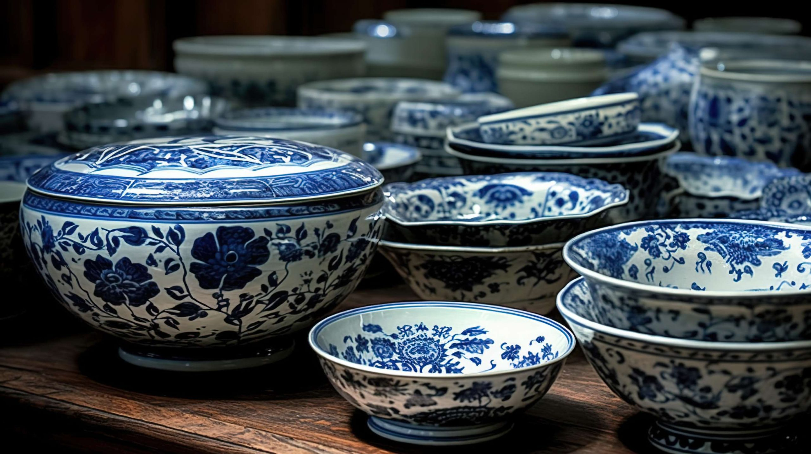
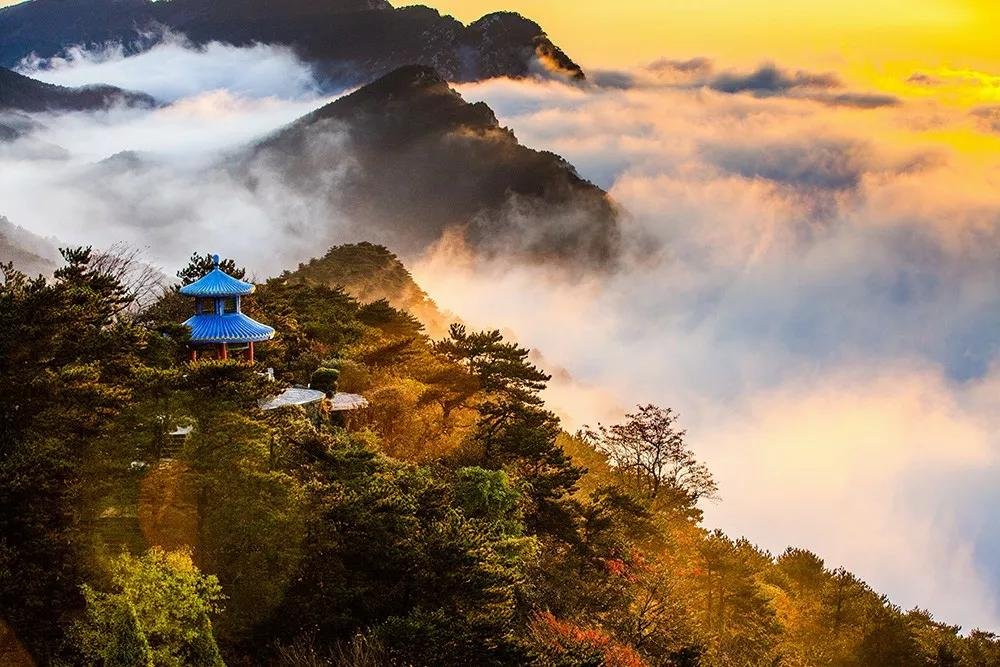
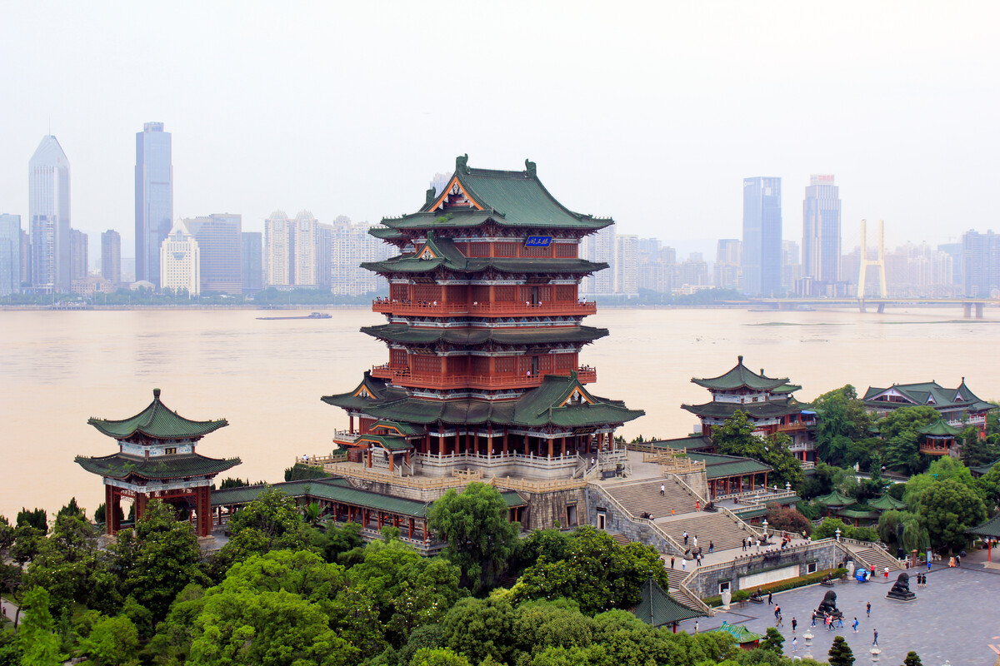
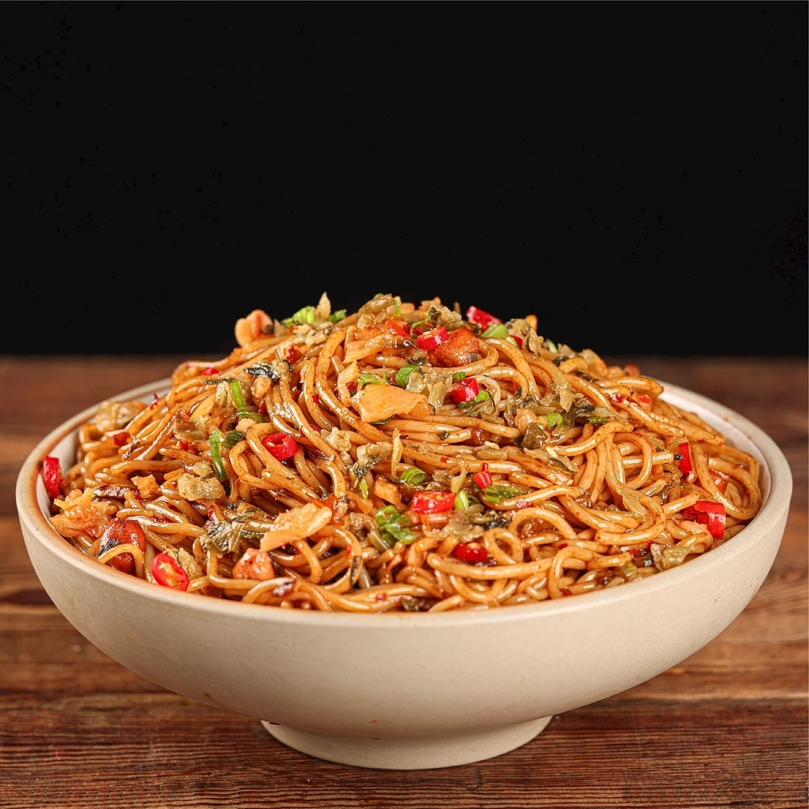
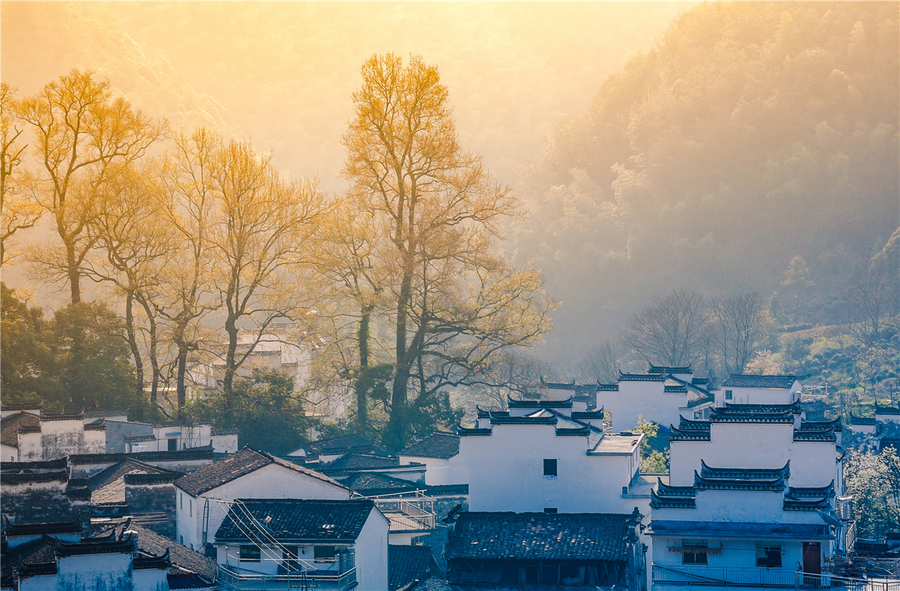
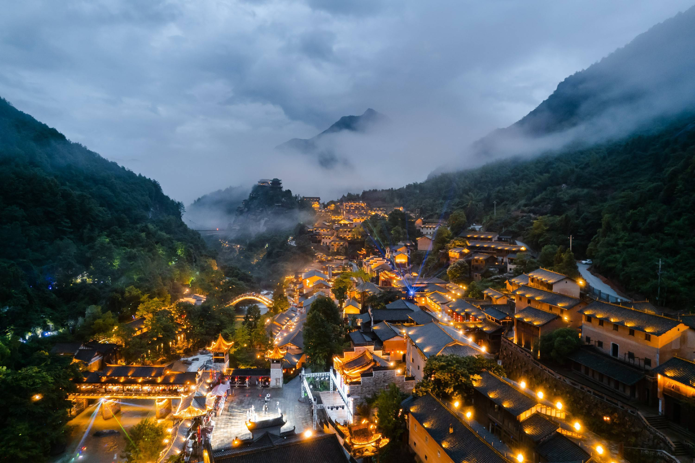
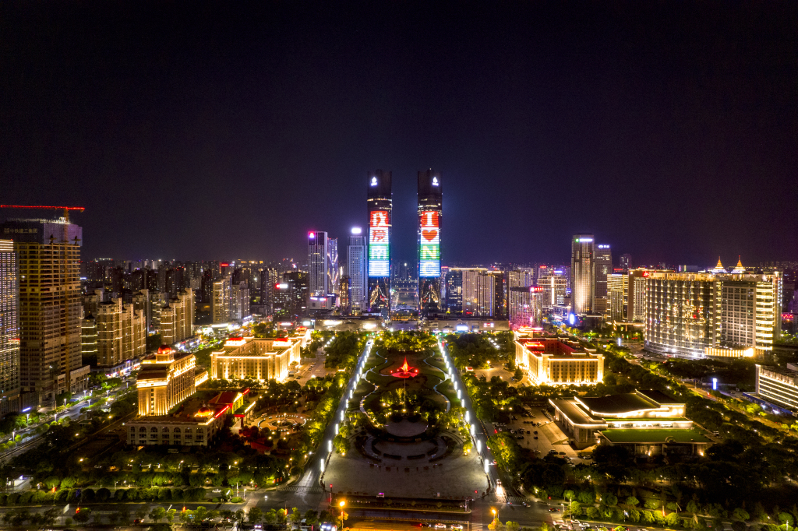

The Porcelain Capital
For over 1,000 years, Jingdezhen has been the undisputed porcelain capital of the world. The intricate blue-and-white designs, the perfect glaze, and the dedication of the craftsmen make every piece a historical masterpiece. Visitors can walk through ancient kilns, explore the Ceramic Art Avenue, and even try throwing their own clay on the potter's wheel.

Mount Lu (Lushan)
A UNESCO World Heritage site, Mount Lu is famed for its stunning sea of clouds, magnificent waterfalls, and deeply rooted poetic history. It was a spiritual center for Buddhist and Taoist masters and a summer retreat for historical figures. The rugged peaks hidden in the mist look exactly like traditional Chinese ink paintings.

Tengwang Pavilion
Located in Nanchang, this architectural marvel is one of the Four Great Towers of China. It was immortalized by the famous Tang Dynasty poet Wang Bo. With its green glazed tiles, red pillars, and intricate wooden brackets, it stands proudly along the Gan River, offering a spectacular view, especially at sunset.

Spicy & Savory Delights
Jiangxi cuisine (Gan cuisine) is China's hidden culinary treasure. Known for its robust flavors, heavy use of fresh chili peppers, and slow-braised meats. Don't leave without trying the famous Nanchang Mixed Rice Noodles, the incredibly tender Three-Cup Chicken (Sanbeiji), and the spicy steamed pork with rice flour.
Visual Journey


